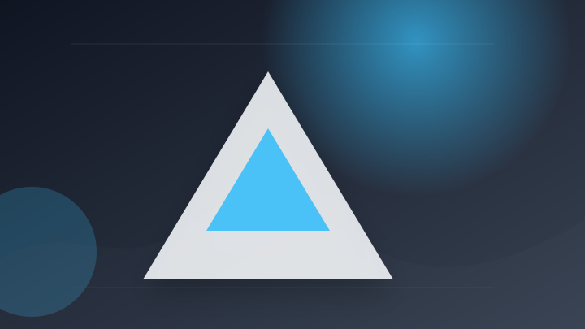
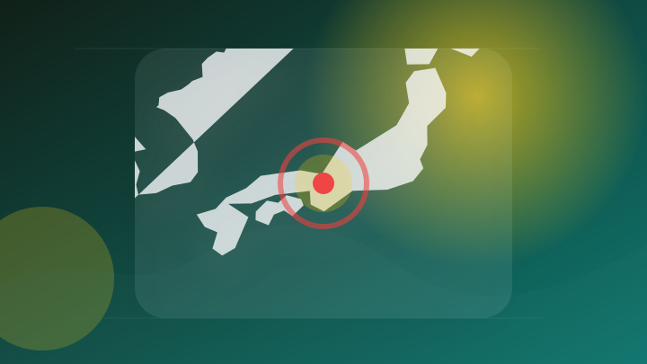
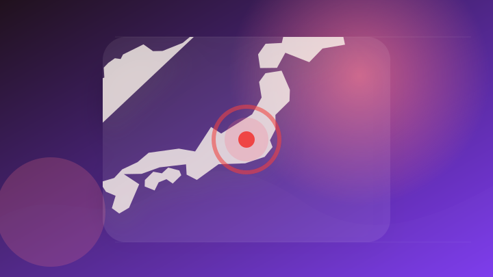

AI
6 topics

Anthropic「Claude Opus 5」発表 Fable 5に迫る性能、API料金は半額に - リアルサウンド
Anthropic「Claude Opus 5」発表 Fable 5に迫る性能、API料金は半額に リアルサウンド
- 注目ポイント
- Claude・発表｜出典: リアルサウンド
- 見るべきポイント
- 誰に影響するか、いつから変わるか、報道元が示す具体的な根拠を確認。
OpenAIのChatGPTとCodex、世界規模の障害で数時間停止 利用制限をリセット - x.com
OpenAIのChatGPTとCodex、世界規模の障害で数時間停止 利用制限をリセット x.com
- 注目ポイント
- 障害・OpenAI・停止｜出典: x.com
- 見るべきポイント
- 対象製品・バージョン、利用可能時期、影響範囲と必要な対応を確認。
Gemini本命でも使い分けが正解、ChatGPTとCopilotの得意技 - 日経クロステック
Gemini本命でも使い分けが正解、ChatGPTとCopilotの得意技 日経クロステック
- 注目ポイント
- ChatGPT｜出典: 日経クロステック
- 見るべきポイント
- 誰に影響するか、いつから変わるか、報道元が示す具体的な根拠を確認。
無料版Claudeもこれで快適。強力な設定「インストラクション」、“書き方のコツ”を紹介 - Gizmodo
無料版Claudeもこれで快適。強力な設定「インストラクション」、“書き方のコツ”を紹介 Gizmodo
- 注目ポイント
- Claude｜出典: Gizmodo
- 見るべきポイント
- 誰に影響するか、いつから変わるか、報道元が示す具体的な根拠を確認。
ChatGPT、OpenAIの人工知能プラットフォームは、大規模な中断に直面しています。 - Informat.ro
ChatGPT、OpenAIの人工知能プラットフォームは、大規模な中断に直面しています。 Informat.ro
- 注目ポイント
- OpenAI｜出典: Informat.ro
- 見るべきポイント
- 誰に影響するか、いつから変わるか、報道元が示す具体的な根拠を確認。

AIに数時間の仕事を任せやすく Anthropic「Claude Opus 5」が長時間業務を強化 - DXマガジン
AIに数時間の仕事を任せやすく Anthropic「Claude Opus 5」が長時間業務を強化 DXマガジン
- 注目ポイント
- Claude｜出典: DXマガジン
- 見るべきポイント
- 誰に影響するか、いつから変わるか、報道元が示す具体的な根拠を確認。
IT業界
6 topics

韓国の外交官全体の個人情報が流出したものと推定されるハッキング事態で、政府のサイバーセキュリティ力量が俎上に載せられた。 サイバー攻撃が国家安保を脅かす水準に高度化されているが、国家次元の対応体系確立.. - 매일경제
韓国の外交官全体の個人情報が流出したものと推定されるハッキング事態で、政府のサイバーセキュリティ力量が俎上に載せら…
- 注目ポイント
- サイバー攻撃・政府｜出典: 매일경제
- 見るべきポイント
- 誰に影響するか、いつから変わるか、報道元が示す具体的な根拠を確認。
Google Cloudが脆弱性修正のAIエージェント「CodeMender」の提供を開始（ビジネス＋IT） - Yahoo!ニュース
Google Cloudが脆弱性修正のAIエージェント「CodeMender」の提供を開始（ビジネス＋IT） Ya…
- 注目ポイント
- 脆弱性・AI・Google｜出典: Yahoo!ニュース
- 見るべきポイント
- 対象製品・バージョン、利用可能時期、影響範囲と必要な対応を確認。
Appleはトランプ政権に中国製メモリの利用許可を求めるもMicronが反発 - gigazine.net
Appleはトランプ政権に中国製メモリの利用許可を求めるもMicronが反発 gigazine.net
- 注目ポイント
- Apple｜出典: gigazine.net
- 見るべきポイント
- 誰に影響するか、いつから変わるか、報道元が示す具体的な根拠を確認。
Mrs. GREEN APPLE presents『CEREMONY』、世代やジャンル超えて共有する「音楽」への思い 1日目レポート【写真複数】 - 佐賀新聞
Mrs. GREEN APPLE presents『CEREMONY』、世代やジャンル超えて共有する「音楽」への思…
- 注目ポイント
- Apple｜出典: 佐賀新聞
- 見るべきポイント
- 誰に影響するか、いつから変わるか、報道元が示す具体的な根拠を確認。
Mrs. GREEN APPLE「超最高だった」「本当に光栄」大好きな『スパイダーマン』主題歌、トム・ホランド＆ゼンデイヤと対談実現に歓喜（TOKYO FM＋） - Yahoo!ニュース
Mrs. GREEN APPLE「超最高だった」「本当に光栄」大好きな『スパイダーマン』主題歌、トム・ホランド＆ゼ…
- 注目ポイント
- Apple｜出典: Yahoo!ニュース
- 見るべきポイント
- 誰に影響するか、いつから変わるか、報道元が示す具体的な根拠を確認。
最新情報：NVIDIA、MICROSOFT、META、IBMを含む20社以上のテクノロジー企業がオープンソースのAI - KuCoin
最新情報：NVIDIA、MICROSOFT、META、IBMを含む20社以上のテクノロジー企業がオープンソースのA…
- 注目ポイント
- AI・Microsoft｜出典: KuCoin
- 見るべきポイント
- 誰に影響するか、いつから変わるか、報道元が示す具体的な根拠を確認。
政治
2 topics

国会前デモを若者らが緊急開催 「国会軽視」「数の横暴」などと訴え [高市早苗首相] - 朝日新聞
国会前デモを若者らが緊急開催 「国会軽視」「数の横暴」などと訴え [高市早苗首相] 朝日新聞
- 注目ポイント
- 国会前デモを若者らが緊急開催・「国会軽視」「数の横暴」などと訴え・[高市早苗首相]｜出典: 朝日新聞
- 見るべきポイント
- 誰に影響するか、いつから変わるか、報道元が示す具体的な根拠を確認。
混迷国会で”高市離れ”の兆候か?「期待と違う」市民が求める政策は?【報道特集】（TBS NEWS DIG Powered by JNN） - Yahoo!ニュース
混迷国会で”高市離れ”の兆候か?「期待と違う」市民が求める政策は?【報道特集】（TBS NEWS DIG Powe…
- 注目ポイント
- 混迷国会で”高市離れ”の兆候か?「期待と違う」市民が求める政策は?【報道特集】（TBS・NEWS・DIG｜出典: Yahoo!ニュース
- 見るべきポイント
- 誰に影響するか、いつから変わるか、報道元が示す具体的な根拠を確認。
社会
2 topics
電動丸ノコギリから死亡男性のＤＮＡ型、遺体切断後にフリマサイト出品か…利根川河川敷で遺体発見 - au Webポータル
電動丸ノコギリから死亡男性のＤＮＡ型、遺体切断後にフリマサイト出品か…利根川河川敷で遺体発見 au Webポータル
- 注目ポイント
- 死亡｜出典: au Webポータル
- 見るべきポイント
- 発生場所と時刻、警察・消防など公的機関の発表、続報で変わった点を確認。

生活保護「再減額」取り消しを 府内の利用者27人が集団審査請求／最高裁判決を無視「怒りの意思表示を」 - 京都民報Web
生活保護「再減額」取り消しを 府内の利用者27人が集団審査請求／最高裁判決を無視「怒りの意思表示を」 京都民報Web
- 注目ポイント
- 裁判｜出典: 京都民報Web
- 見るべきポイント
- 誰に影響するか、いつから変わるか、報道元が示す具体的な根拠を確認。
事件・事故
5 topics

北海道稚内市の海域でナマコ密漁 8人目の逮捕者 容疑者の役割などを捜査（2026年7月25日掲載）｜STV NEWS NNN - 日テレNEWS NNN
北海道稚内市の海域でナマコ密漁 8人目の逮捕者 容疑者の役割などを捜査（2026年7月25日掲載）
- 注目ポイント
- 逮捕｜出典: 日テレNEWS NNN
- 見るべきポイント
- 発生場所と時刻、警察・消防など公的機関の発表、続報で変わった点を確認。

【8人目】稚内ナマコ密漁事件で新たな逮捕者…漁業法違反容疑で無職の42歳男”逮捕”役割分担を捜査…警察は「認否は明かさない」事件発覚前には5人乗りゴムボート転覆で1人死亡〈北海道稚内市〉 - FNNプライムオンライン
【8人目】稚内ナマコ密漁事件で新たな逮捕者…漁業法違反容疑で無職の42歳男”逮捕”役割分担を捜査…警察は「認否は明…
- 注目ポイント
- 逮捕｜出典: FNNプライムオンライン
- 見るべきポイント
- 発生場所と時刻、警察・消防など公的機関の発表、続報で変わった点を確認。

車に追突したバイクの男性が死亡 群馬・安中市 - 上毛新聞電子版
車に追突したバイクの男性が死亡 群馬・安中市 上毛新聞電子版
- 注目ポイント
- 死亡｜出典: 上毛新聞電子版
- 見るべきポイント
- 発生場所と時刻、警察・消防など公的機関の発表、続報で変わった点を確認。
［道路情報］新潟市の新新バイパスが事故で一時通行規制、黒埼方面に向かう車線（7月25日） - 新潟日報
［道路情報］新潟市の新新バイパスが事故で一時通行規制、黒埼方面に向かう車線（7月25日） 新潟日報
- 注目ポイント
- 規制・事故｜出典: 新潟日報
- 見るべきポイント
- 発生場所と時刻、警察・消防など公的機関の発表、続報で変わった点を確認。
小学生が検察官の仕事を体験 特殊詐欺事件を題材に捜査 – Quebee キュエビー - QAB 琉球朝日放送
小学生が検察官の仕事を体験 特殊詐欺事件を題材に捜査 – Quebee キュエビー QAB 琉球朝日放送
- 注目ポイント
- 小学生が検察官の仕事を体験・特殊詐欺事件を題材に捜査・Quebee｜出典: QAB 琉球朝日放送
- 見るべきポイント
- 発生場所と時刻、警察・消防など公的機関の発表、続報で変わった点を確認。
経済
4 topics

米株市場が軟調に推移、FRBの利上げ観測とAI大手決算が重荷に - Межа. Новини України.
米株市場が軟調に推移、FRBの利上げ観測とAI大手決算が重荷に Межа. Новини України.
- 注目ポイント
- 決算・AI｜出典: Межа. Новини України.
- 見るべきポイント
- 対象期間、金額・変化率、前回との比較、生活や市場への影響を確認。
来週の相場で注目すべき3つのポイント：日米韓テック大手決算、日銀金融政策決定会合、米FOMC(フィスコ) - Yahoo!ファイナンス
来週の相場で注目すべき3つのポイント：日米韓テック大手決算、日銀金融政策決定会合、米FOMC(フィスコ) Yaho…
- 注目ポイント
- 決算｜出典: Yahoo!ファイナンス
- 見るべきポイント
- 対象期間、金額・変化率、前回との比較、生活や市場への影響を確認。

岡山県税収入過去最高２８７４億円 ２５年度決算見込み、個人税が全体けん引 - 山陽新聞
岡山県税収入過去最高２８７４億円 ２５年度決算見込み、個人税が全体けん引 山陽新聞
- 注目ポイント
- 決算｜出典: 山陽新聞
- 見るべきポイント
- 対象になる人、決定済みか検討中か、施行日・申請期限を確認。
米国株式市場見通し：AI関連株の決算集中、FOMCなど重要イベント目白押し - ｄメニューニュース
米国株式市場見通し：AI関連株の決算集中、FOMCなど重要イベント目白押し ｄメニューニュース
- 注目ポイント
- 決算・AI｜出典: ｄメニューニュース
- 見るべきポイント
- 対象期間、金額・変化率、前回との比較、生活や市場への影響を確認。